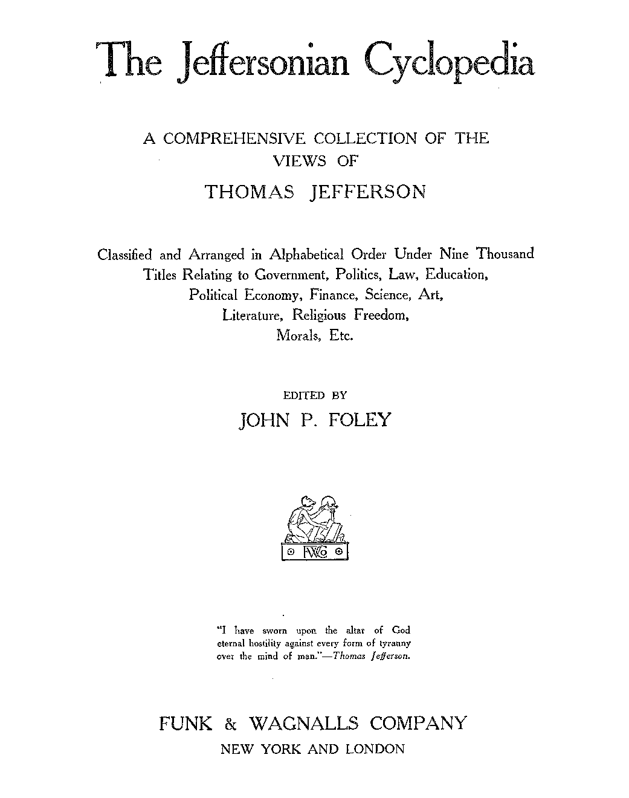

<titlePage>
<docTitle>
<titlePart type="main">The Jeffersonian Cyclopedia</titlePart>
<titlePart type="sub">A COMPREHENSIVE COLLECTION OF THE <lb/>
VIEWS OF <lb/>
THOMAS JEFFERSON
</titlePart>
<titlePart type="desc">
Classified and Arranged in Alphabetical Order Under Nine Thousand <lb/>
Titles Relating to Government, Politics, Law, Education, <lb/>
Political Economy, Finance, Science, Art, <lb/>
Literature, Religious Freedom, <lb/>
Morals, Etc.
</titlePart>
</docTitle>
<byline>
EDITED BY <lb/>
JOHN P. FOLEY
</byline>
<figure/>
<epigraph>
<cit>
<q>"I have sworn upon the altar of God <lb/>
eternal hostility against every form of tyranny <lb/>
over the mind of man."</q>
<bibl><author> — <i>Thomas Jefferson.</i></author></bibl>
</cit>
</epigraph>
<docImprint>
<publisher>FUNK & WAGNALLS COMPANY</publisher>
<pubPlace>NEW YORK AND LONDON</pubPlace>
<pb/>
Copyright, 1900, BY <lb/>
FUNK & WAGNALLS COMPANY <lb/>
REGISTERED AT STATIONERS' HALL, LONDON, ENGLAND <lb/>
[<i>Printed in the United States of America</i>]
</docImprint>
</titlePage>